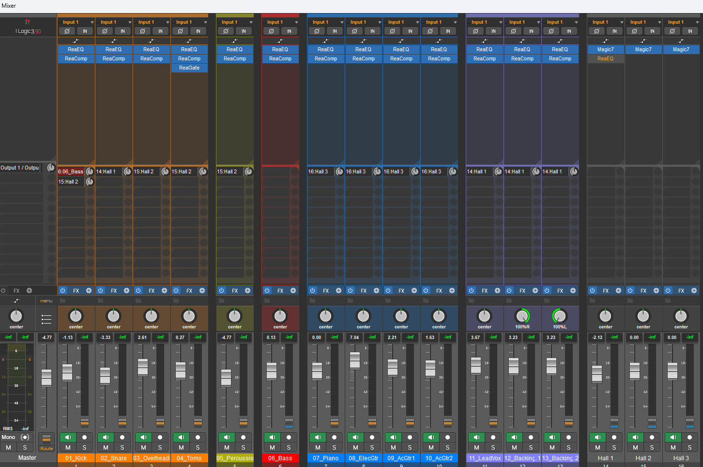

MUSIK & AUDIOPRODUKTION
Musik & Produktion
Rap, Sprachaufnahme und Mixing
Neben der filmischen Audiobearbeitung beschäftige ich mich auch mit Musikproduktion und der klanglichen Gestaltung von Musik und Sprache. Die folgenden Beispiele geben einen Einblick in meine eigenen musikalischen Arbeiten und meine Fähigkeiten im Mixing.
Potenzial
Ein Ausschnitt aus einem eigenen Rap-Projekt. Text und Sprachaufnahme stammen von mir. Der verwendete Beat basiert auf einem externen Instrumental.
Eigener Text und eigene Sprachaufnahme
Musikmischung
Im Rahmen einer Hochschulaufgabe habe ich ein unbearbeitetes RAW-Projektmaterial gemischt. Das Hörbeispiel zeigt den direkten Vergleich zwischen der ursprünglichen Aufnahme und meiner bearbeiteten Mischung.
Unbearbeitet
Ursprüngliches RAW-Material
Bearbeitet
Meine bearbeitete Mischung

Einblick in das Mixing
Ansicht des Mixers mit den einzelnen Kanälen und der Bearbeitung des Audiomaterials.
Verwendete Software
REAPER